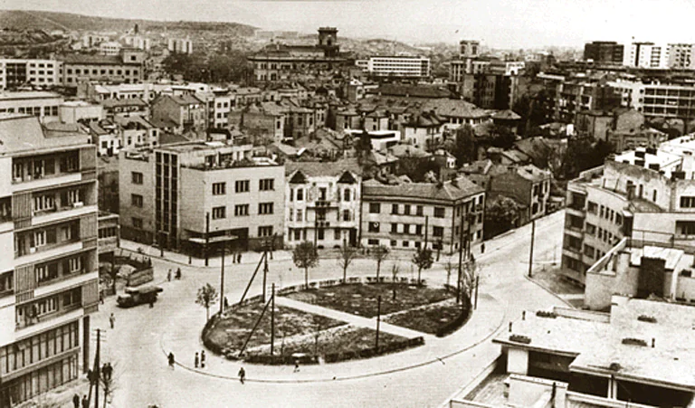
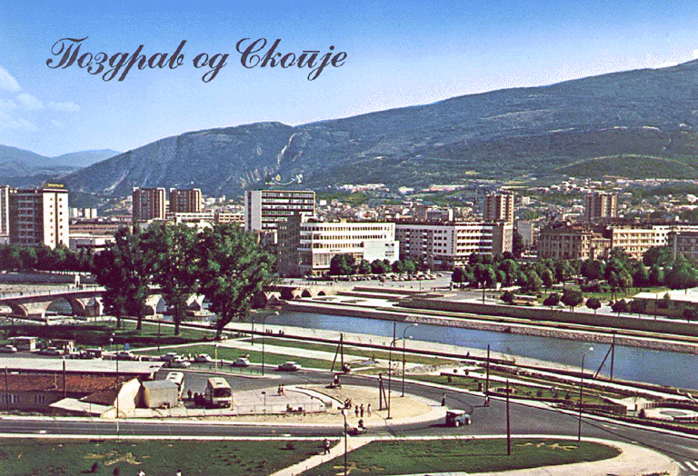
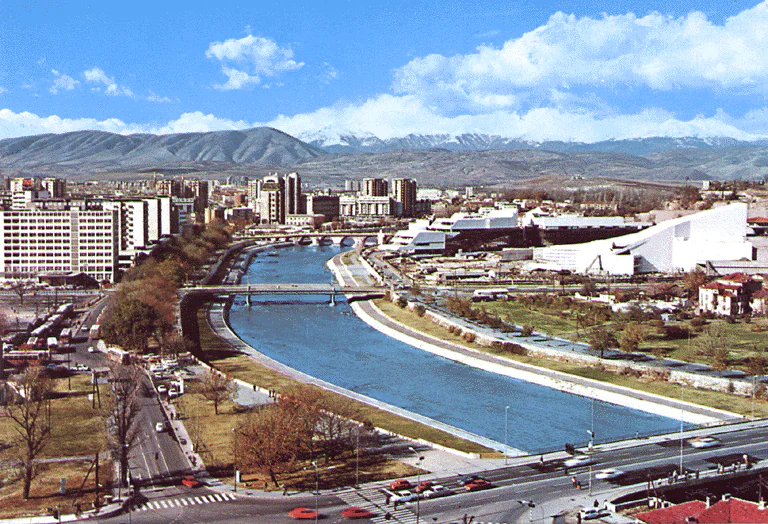
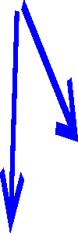
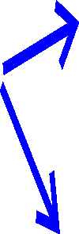
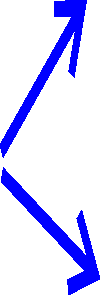
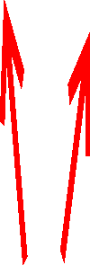

Platz
- Drehbuch
- Dimitrie Osmanli, Simon Drakul
- Kamera
- Kiro Bilbilovski
- Jahr
- 1964
- Dauer
- 00:06

Blick auf die Stadt, rechts der Uhrturm, links die Gazi-Isa-Beg-Moschee, mit dem Viertel „Saat Kula“. (1940er Jahre)

Die Betonbrücke beim heutigen Hotel „Grand“. Im Hintergrund ist die Festung von Skopje - Kale zu sehen. (1950er Jahre)

Panorama von Skopje. (1950er Jahre)

Panorama von Skopje. Im Vordergrund die Betonbrücke (beim heutigen Grand Hotel), im Hintergrund die Steinbrücke, das Offiziersheim und die Nationalbank. Rechts oben die Festung von Skopje - Kale. Der Kai ist als Promenade und Fahrstraße gestaltet, mit Grünanlagen dazwischen. (1950er Jahre)

Blick auf die Betonbrücke (beim heutigen Grand Hotel). Im Vordergrund das Viertel Pajko. Im Hintergrund die Festung von Skopje - Kale, rechts davon die Mustafa-Pascha-Moschee. (1950er Jahre)

Skopje, 1950er Jahre, mit neuen Wohnhäusern. In der Mitte das Gelände des heutigen Grünen Marktes.

Panorama der Stadt Skopje. Im Vordergrund der Freiheitsplatz. Die Straße zum Vardar ist die „Vasil Glavinov“. An der ersten Ecke des Platzes der Eingang der Grundschule „Goce Delčev“. - 1950er Jahre

Der Platz „Sloboda“. Im Hintergrund das Offiziersheim und die Nationalbank. - 1950er Jahre

Das Zentrum von Skopje vor dem Erdbeben - um 1960.

Panoramaaufnahme des zentralen Stadtgebiets von Skopje aus dem Flugzeug. Der Platz mit dem Offiziersheim, der Nationalbank und der Wirtschafts- und Handelskammer. Rechts die Hauptpost, links unten das Dach des Nationaltheaters. Das Foto stammt aus den 1950er Jahren.

Panoramafoto des zentralen Gebiets von Skopje, - 1950er Jahre

Luftaufnahme des zentralen Stadtgebiets vor dem Erdbeben - 1963. Zwischen den Türmen (oben rechts), wo heute das Einkaufszentrum steht, ist die Kirche „Zar Konstantin und Zarin Helena“ zu sehen.

Panorama eines Teils des alten Basars von Skopje, 1950er Jahre.

Blick auf einen Teil des Bit-Pazar und den alten Basar. Darüber ist die Mustafa-Pascha-Moschee zu sehen. (1950er Jahre)

Blick auf das Zentrum von Skopje. Die Steinbrücke dient noch als Verkehrsweg. Das Foto entstand kurz nach dem verheerenden Erdbeben vom 26. Juli 1963.

Skopje 1968. Der Standort des heutigen städtischen Einkaufszentrums.

Panoramafoto des Stadtzentrums. Der Platz dient noch als Parkplatz für Kraftfahrzeuge.
(1960er Jahre)

Panorama des zentralen Teils der Stadt mit der Regulierung des Vardar, fotografiert von der Festung von Skopje - Kale. (1970er Jahre). Im Vordergrund die Steinbrücke, das Kaufhaus Pelister und andere Gebäude.

Blick von der Festung von Skopje - Kale auf das Zentrum von Skopje. Die Promenade am rechten Ufer des Vardar ist voller Menschen. (1970er Jahre)

Blick von der Festung von Skopje - Kale auf das Zentrum der Stadt Skopje. (1970er Jahre)

Blick auf das linke Ufer des Vardar, direkt an der Steinbrücke. Unten im Bild ist ein Teil der Kirche Hl. Demetrius zu sehen. (1970er Jahre)

Blick auf das linke Ufer des Vardar, direkt an der Steinbrücke. Unten im Bild ist ein Teil der Kirche Hl. Demetrius zu sehen. (1980er Jahre)

Panorama von Skopje. Im Vordergrund der kleine Park „Kämpferin“. Unten links ist ein Teil des Stadtkrankenhauses und ein Teil des Parlamentsgebäudes zu sehen. - 1980er Jahre.

Der Park „Kämpferin“ mit dem städtischen Einkaufszentrum, mit Wohn- und öffentlichen Gebäuden der Stadt Skopje. - 1980er Jahre.

Blick auf den Boulevard und die Brücke „Goce Delčev“ mit der Überführung im Vordergrund. Im Hintergrund das Telekommunikationszentrum und ein Teil des Wohnkomplexes „Gradski zid“. (1980er Jahre)

Blick auf das zentrale Stadtgebiet. Im Vordergrund ein Teil der Banken, die Brücke „Revolucija“ und das Theater. Im Hintergrund die Betonbrücke, die Steinbrücke und das Telekommunikationszentrum - 1980er Jahre.

Blick auf das zentrale Stadtgebiet vom Dach des heutigen Finanzamtes. In der Ferne ist die Steinbrücke zu sehen. Rechts auf der Postkarte das heutige Theater, darüber zeichnet sich die Festung von Skopje - Kale ab - 1980er Jahre.

Skopje Ende der 1970er Jahre. Die Brücke beim heutigen Hotel „Grand“. Links erhebt sich das Gebäude des Mazedonischen Rundfunks, rechts das Gebäude des heutigen Zahlungsverkehrsamtes.

Panorama von Skopje vom Hang des Vodno. Im Vordergrund das Hotel „Panorama“. (1980er Jahre)

Panorama von Skopje bei Nacht, von den Hängen des Vodno. (1980er Jahre)








 Aquädukt4 Postkarten
Aquädukt4 Postkarten Kale30 Postkarten
Kale30 Postkarten Brücken60 Postkarten
Brücken60 Postkarten Kai58 Postkarten
Kai58 Postkarten Platz46 Postkarten
Platz46 Postkarten Bauten66 Postkarten
Bauten66 Postkarten Christliche Gotteshäuser19 Postkarten
Christliche Gotteshäuser19 Postkarten Muslimische Bauten33 Postkarten
Muslimische Bauten33 Postkarten Offiziersheim29 Postkarten
Offiziersheim29 Postkarten Theater28 Postkarten
Theater28 Postkarten Bahnhof13 Postkarten
Bahnhof13 Postkarten Schulen36 Postkarten
Schulen36 Postkarten Parks12 Postkarten
Parks12 Postkarten Märkte18 Postkarten
Märkte18 Postkarten Straßen38 Postkarten
Straßen38 Postkarten Panorama I60 Postkarten
Panorama I60 Postkarten Panorama II30 Postkarten
Panorama II30 Postkarten Collagen55 Postkarten
Collagen55 Postkarten Hochwasser9 Postkarten
Hochwasser9 Postkarten Erdbeben27 Postkarten
Erdbeben27 Postkarten Skopje 200026 Postkarten
Skopje 200026 Postkarten